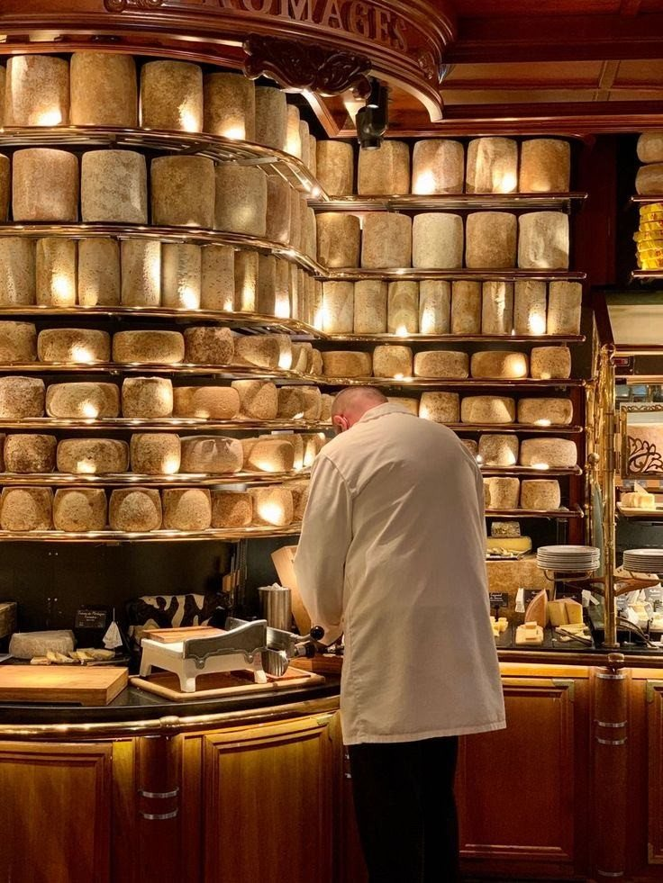
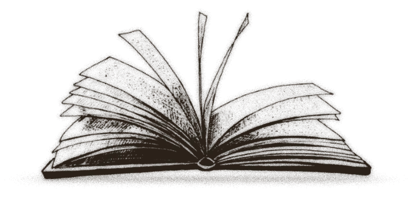
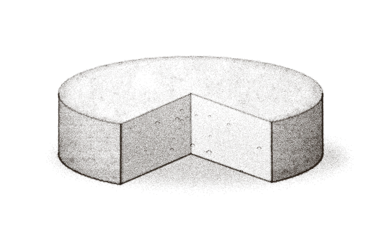
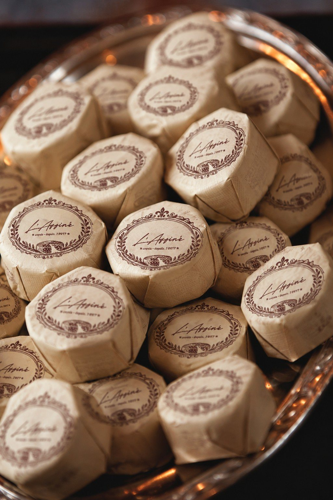
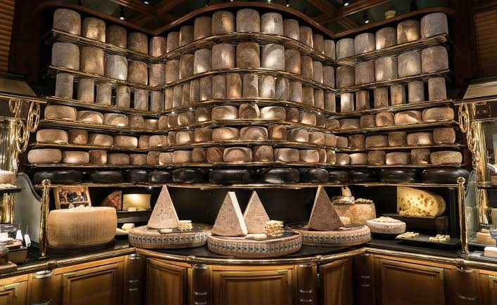
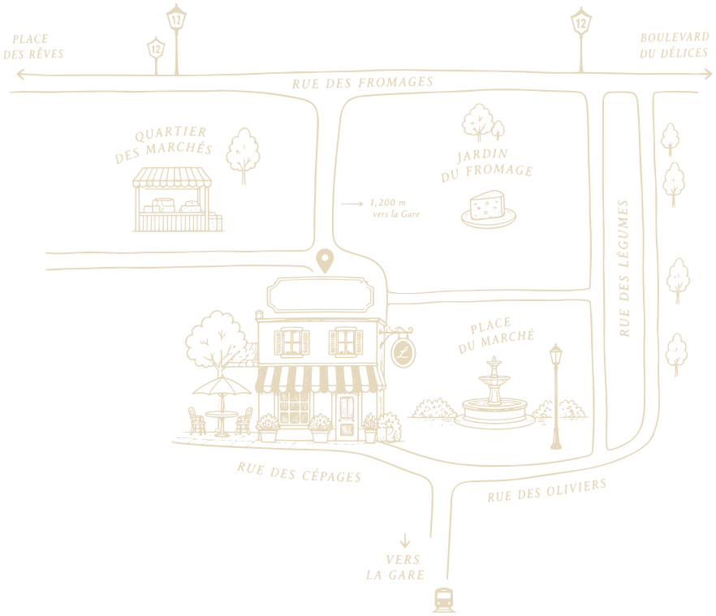

Nº 01PLANCHE

Fromage Frais
프레시 · 소젖
“갓 만든 우유의 단맛과 산뜻한 산미”
- 숙성
- 1주
- 산지
- Savoie
- 가격
- 100g · 7,500원
Cliquez pour passer
Aujourd'hui
Visiter la Boutique →
Sommaire
이 집의 여섯 갈래 이야기
오래된 카탈로그를 넘기듯, 원하는 장으로 바로 이동하세요.

★ Signature — Trouver par l'Âge
숙성 기간을 고르면, 그 시간만큼 익은 치즈를 꺼내 드립니다.
3spécimens trouvés
프레시 · 소젖
“갓 만든 우유의 단맛과 산뜻한 산미”

연성 · 염소젖
“헤이즐넛 향이 은은한 염소젖 치즈”

연성 · 소젖
“크리미한 속살과 버섯 향의 껍질”

반경성 · 소젖
“회색 껍질 아래 부드러운 흙내음”

블루 · 소젖
“푸른 결이 주는 짭조름한 여운”

반경성 · 소젖
“녹였을 때 비로소 완성되는 고소함”

반경성 · 소젖
“과일 향과 가벼운 쌉쌀함의 균형”

경성 · 소젖
“알프스 목초의 꽃향과 깊은 감칠맛”

경성 · 소젖
“결정이 씹히는 진한 견과 풍미”

La Maison · Petites meules
한 손에 쥐어지는 작은 하우스 치즈
숙성고에서 갓 꺼낸 작은 치즈를 한 덩이씩 종이에 감싸고, 그 위에 L'Affiné의 문장(紋章)을 찍었습니다. 포장을 펼치는 순간까지 숙성의 향을 그대로 지킵니다.
Édition Nº 139
Chroniques de la cave
Recette
감자와 베이컨, 그리고 반으로 가른 Reblochon. 알프스 산장에서 시작된 겨울 요리를 집에서 굽는 법.
Lire la suite →Accord
꽃향이 도는 경성 치즈에는 산뜻한 사보이 화이트 와인을. 숙성 기간별로 고른 페어링 노트.
Lire la suite →Histoire
하루에 수백 개의 휠을 닦고 뒤집는 일. 숙성고 안에서 보내는 장인의 하루를 따라가 봅니다.
Lire la suite →

Plan du quartier
매장으로 오시는 길
새로 숙성을 마친 치즈와 시음회 소식을 편지로 먼저 보내드립니다.